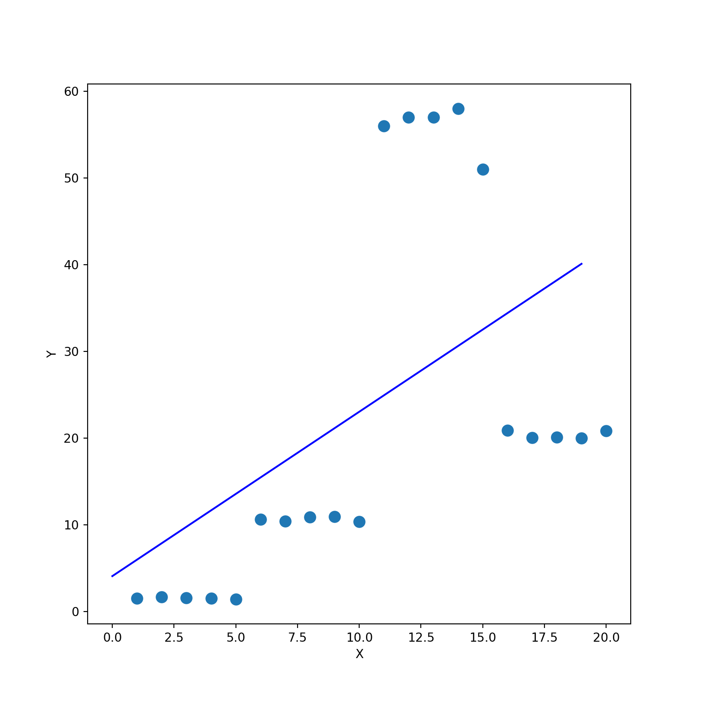
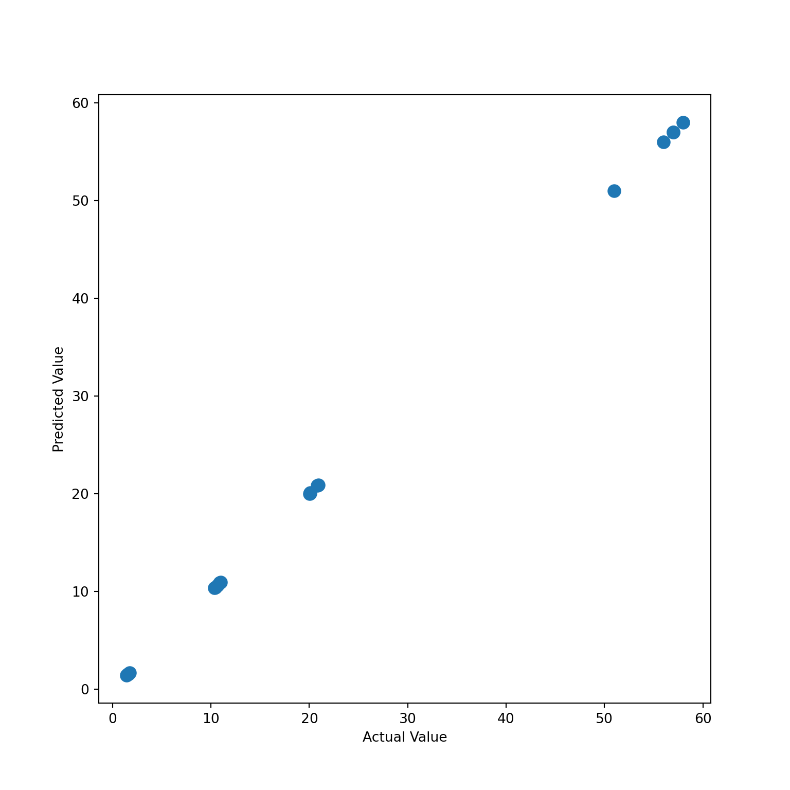
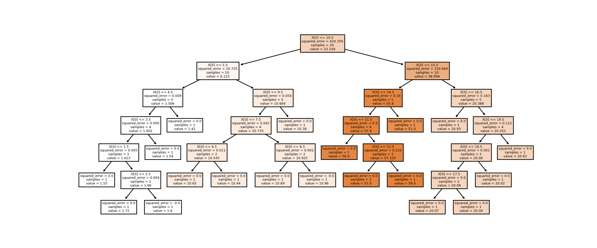

In this chapter, We show how regression trees can fit non-linear data.
## Packages
from sklearn.tree import DecisionTreeRegressor
from sklearn.model_selection import train_test_split
import matplotlib.pyplot as plt
import seaborn as sns
from sklearn.metrics import r2_score
from sklearn.metrics import mean_squared_log_error
import pandas as pd
import numpy as np
from matplotlib import pyplot as plt
from sklearn.linear_model import LinearRegression
from sklearn import treeFirst, we generate random data with two variables x and
y such that it forms four clusters i.e., a non-linear
shape. As you can see from the scatter plot, it looks very difficult to
fit a linear regression model. That said if we fit linear regression and
plot, clearly the line does not have a great fit
np.random.seed(0)
g1 = [round(np.random.uniform(1, 2), 2) for i in range(5)]
g2 = [round(np.random.uniform(10, 11), 2) for i in range(5)]
g3 = np.random.randint(50, 60, size = 5).tolist()
g4 = [round(np.random.uniform(20, 21), 2) for i in range(5)]
df = pd.DataFrame({
'x': np.arange(1, 21, dtype='int').tolist(),
'y': g1 + g2 + g3 + g4
})
df ## x y
## 0 1 1.55
## 1 2 1.72
## 2 3 1.60
## 3 4 1.54
## 4 5 1.42
## 5 6 10.65
## 6 7 10.44
## 7 8 10.89
## 8 9 10.96
## 9 10 10.38
## 10 11 56.00
## 11 12 57.00
## 12 13 57.00
## 13 14 58.00
## 14 15 51.00
## 15 16 20.93
## 16 17 20.07
## 17 18 20.09
## 18 19 20.02
## 19 20 20.83X = df[['x']] # Need two brackets for 1D - CRUCIAL *
y = df['y']
lin_reg = LinearRegression()
lin_reg.fit(X, y)LinearRegression()In a Jupyter environment, please rerun this cell to show the HTML representation or trust the notebook.
LinearRegression()
plt.scatter(X, y, s=80)
plt.xlabel('X')
plt.ylabel('Y')
plt.plot(lin_reg.intercept_ + (lin_reg.coef_ * df['x']), color = 'blue')
plt.show()
Instead, we can use a regression tree.
The Predicted Values vs Actual Values plot tells that we
have a perfect fit. Although this is a clear sign that our model is
overfitting, I just wanted to demonstrate how powerful a regression tree
can be when fitting a non-linear data.
dt_reg = DecisionTreeRegressor()
dt_reg.fit(X, y)DecisionTreeRegressor()In a Jupyter environment, please rerun this cell to show the HTML representation or trust the notebook.
DecisionTreeRegressor()
y_pred = dt_reg.predict(X)
plt.scatter(x = y, y = y_pred, s=80)
plt.xlabel('Actual Value')
plt.ylabel('Predicted Value')
plt.show()
mean_squared_log_error(y, y_pred)## 0.0fig, axes = plt.subplots(nrows = 1, ncols = 1, figsize = (12,5), dpi = 400)
tree.plot_tree(dt_reg, filled = True)
plt.show()